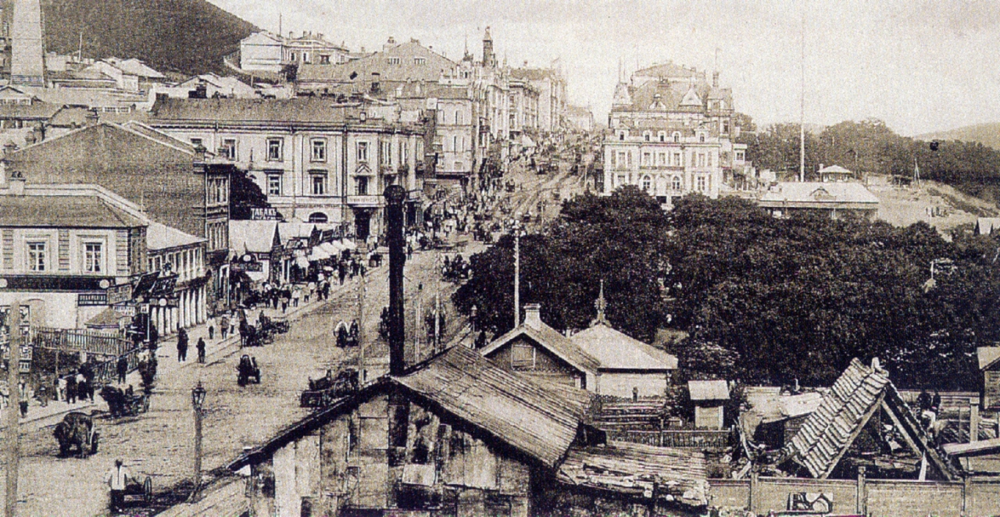

Владивосток в XIX веке
В течение продолжительного времени российское правительство искало опорный пункт на Дальнем востоке; эту роль поочерёдно выполняли Охотск, Аян, Петропавловск-Камчатский, Николаевск-на-Амуре. К середине XIX века поиски форпоста зашли в тупик: ни один из портов не отвечал необходимому требованию: иметь удобную и защищённую гавань, рядом с торговыми путями. Силами генерал-губернатора Восточной Сибири Николая Муравьёва-Амурского был заключён Айгунский договор, началось активное исследование Приамурья, и позже, в результате подписания Тяньцзиньского и Пекинского трактатов, к России были присоединены в том числе территории современного Владивостока. Само название Владивосток появилось ещё в середине 1859-го, употреблялось в газетных статьях и обозначало бухту. 20 июня (2 июля) 1860 года транспорт Сибирской флотилии «Манджур» под командованием капитан-лейтенанта Алексея Карловича Шефнера доставил в бухту Золотой Рог воинское подразделение для основания военного поста, который теперь уже официально получил название Владивосток.
31 октября 1861 года во Владивосток с семьёй прибыл первый гражданский поселенец — купец Яков Семёнов. 15 марта 1862 года был зарегистрирован первый акт покупки им земли, а в 1870 году Семёнова избирают первым старостой поста. Возникает местное самоуправление. К этому времени специальная комиссия принимает решение о назначении Владивостока опорным портом Российской империи на Дальнем востоке. В 1871 году во Владивосток, из Николаевска-на-Амуре, были переведены главная морская база Сибирской военной флотилии, ставка военного губернатора и иные морские ведомства.
В 1870-е годы правительство поощряло переселение в Южно-Уссурийский край, и население поста значительно увеличилось: по первой переписи 1878 года в нём насчитывалось 4163 жителя. В это время пост принимает городовое положение и учреждаются городская Дума, должность городского главы, принимается герб, хотя официально Владивосток ещё не был признан городом. Развитие будущего города проходило в непростой внешнеполитической обстановке, так как в течение 1860-x — 1880-x годов он был под угрозой нападения британского флота. Поэтому параллельно с развитием поста как торгового порта, в нём также строится морская крепость.
В 1880 году пост официально получает статус города. Оживляются торговля и промышленность, вследствие чего начинается активное заселение города: во Владивосток прибывают переселенцы множества национальностей: немцы, поляки, лифляндцы, скандинавы, англичане, американцы, французы, итальянцы, евреи, греки, японцы, корейцы и китайцы. 1 июля 1882 года правительство издаёт указ «О казеннокоштном переселении в Южно-Уссурийский край», согласно которому 250 крестьянских семей могли переселиться в край за счёт государства, многие из которых пополняли население города. Для устройства вновь прибывших было создано Переселенческое управление, которое возглавил Фёдор Буссе.
В городе активно развивалась культурная жизнь. В 1878 г. во Владивостоке был открыт первый театральный зал «Золотой Рог». В 1879 г. появился видоскоп (разновидность иллюзиона), где зрители смотрели «живые картинки».
21 октября (12 октября по старому стилю) 1899 г. во Владивостоке открылся Восточный институт (в настоящее время — Дальневосточный государственный университет). В 1887 г. был открыт Владивостокский общественный бесплатный кабинет для чтения, на базе которого в 1908 г. открылась Владивостокская городская библиотека им. Н. В. Гоголя (в настоящее время — Приморская государственная публичная библиотека им. А. М. Горького).
На 90-е годы XIX века пришёлся демографический и экономический бум, связанный с завершением строительства Уссурийской ветки Транссибирской железнодорожной магистрали и Китайско-Восточной железной дороги. Согласно первой всероссийской переписи населения 1887 года, во Владивостоке проживало 28993 жителя, а через десять лет население города утроилось. Расширение внешнеторговых связей и активная деятельность русского капитала в Китае, Корее и Японии стали требовать большое количество переводчиков. Указом Государственного Совета от 9 июля 1899 года был учреждён Восточный институт.
В 1900 г. было учреждено Владивостокское общество поощрения изящных искусств.